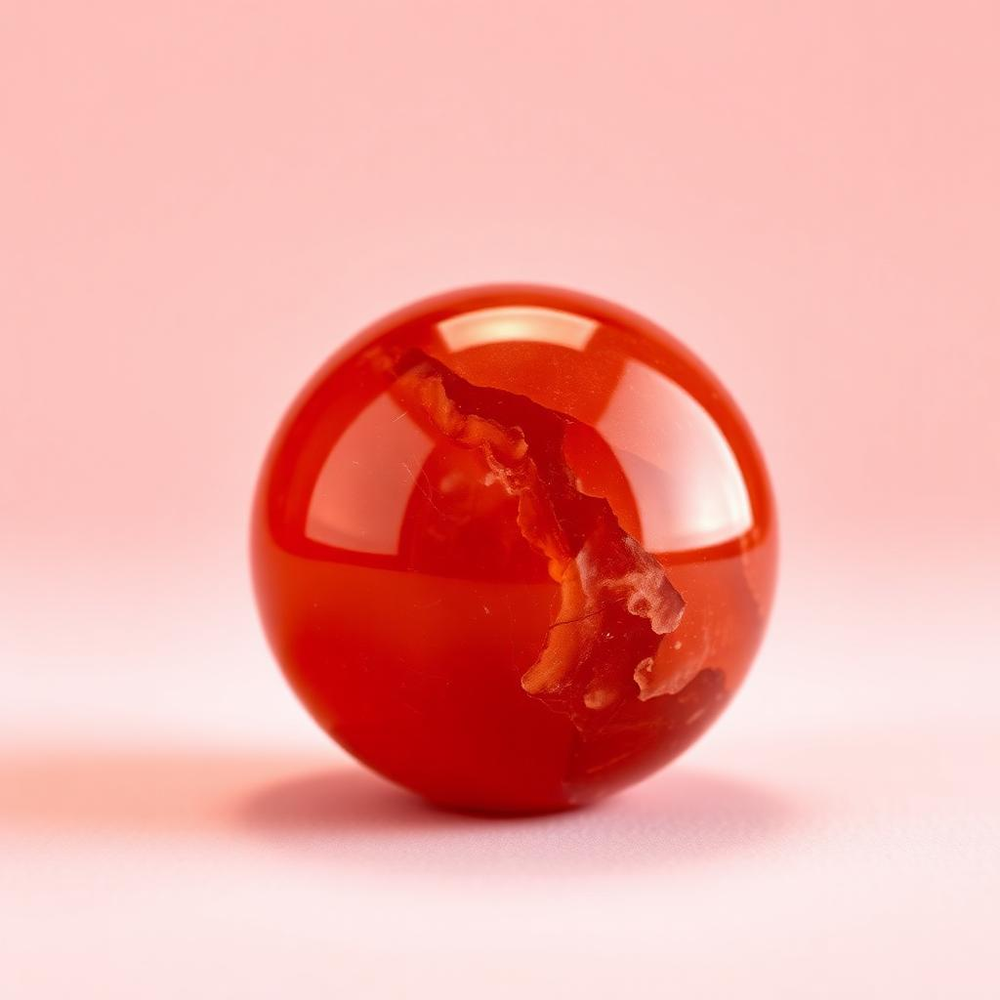

返回
📜 我的流年記錄
🔮
水晶流年命盤
輸入你嘅出生日期，計算流年、本月、今日最啱你嘅開運水晶 ✨
📅 輸入你嘅出生年月日
✨ 開盤
例如 1980 / 01 / 01，按 Enter 即刻測。資料只喺你部機計算，唔會傳到伺服器。
📆 今日開運石

紅玉髓
2026/10/13・火曜日｜行動力爆發，克服拖延
📢 分享我嘅開運石畀朋友
💬 WhatsApp 查詢
✨ 分享文字／複製
📘 Facebook 分享
📷 Instagram
🧵 Threads 搜尋位
🖼️ 生成分享海報圖（免費）
填上生日即可解鎖流年 × 本月 開運石推介 🌸